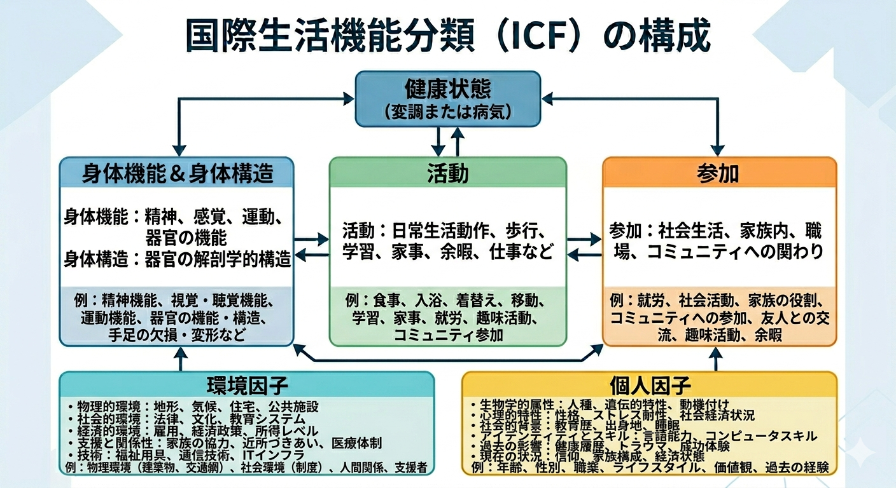
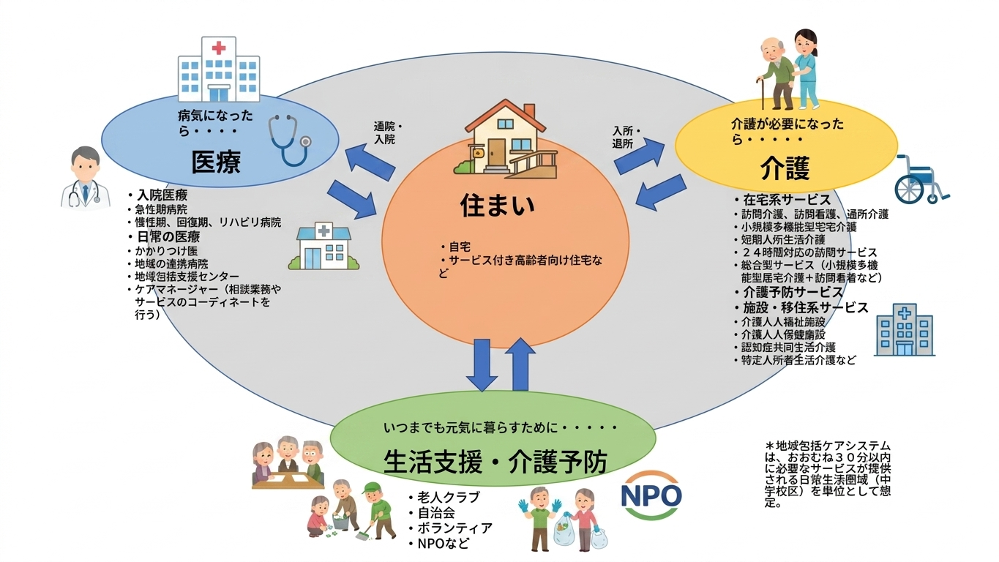
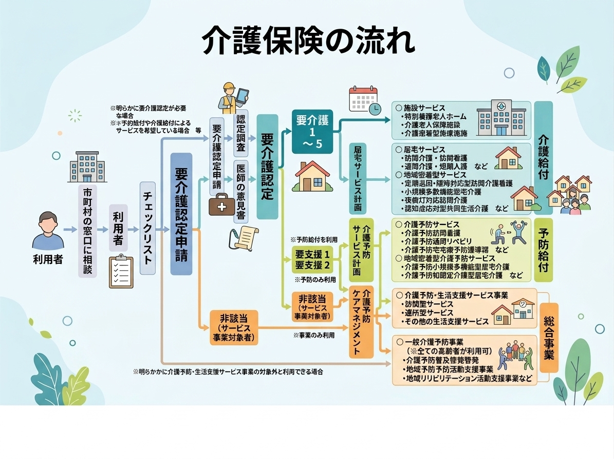

![[商品価格に関しましては、リンクが作成された時点と現時点で情報が変更されている場合がございます。]](https://hbb.afl.rakuten.co.jp/hgb/5470067b.914af9e2.5470067e.d075a986/?me_id=1208006&item_id=10494133&pc=https%3A%2F%2Fthumbnail.image.rakuten.co.jp%2F%400_mall%2Fofficeland%2Fcabinet%2Fsailor%2F3833094.jpg%3F_ex%3D240x240&s=240x240&t=picttext "[商品価格に関しましては、リンクが作成された時点と現時点で情報が変更されている場合がございます。]") | セーラー万年筆 レフィーノ d （2色ボールペン＋シャープペンシル） インディゴ 16-0326-242 |
| 項 | 内容 |
|---|---|
| １項 | すべての国民は、健康で文化的な最低限度の生活を営む権利を有する |
| 2項 | 国はすべての生活場面について社会福祉、社会保障及び公衆衛生の向上及び増進に努めなければならない |
| 医療 | 内容 |
|---|---|
| 0次医療 | プライマリケア |
| 1次医療 | 入院医療 |
| 2次医療 | 入院医療 |
| 3次医療 | 高度専門医療 |
| 項 | 内容 |
|---|---|
| Ⅰ | 本会議は単に疾病または病弱の存在しないことでないのみならず、完全に身体的、精神的及び社会的福祉の状態であると定義されている健康は基本的な人間の権利であり、可能な限り高度の健康水準を達成することは、その現実のために保険部門のほか、多くの社会経済部門の行動を必要とする最も重要な世界的な社会目標であることを再確認する |
| Ⅱ | プライマリヘルスケアとは、次女と自決の精神に則り、地域社会または国が、開発の程度に応じて負担化膿な費用の範囲内で、地域社会の個人または家族の十分な参加によって、彼らが普遍的に利用できる実用的な科学的に適正で、かつ社会的に受け入れられる手法と技術に基づいた欠くことのできないヘルスケアのことである。プライマリ・ヘルス・ケアは、国家保険システムと地域社会の総合的社会経済開発との両方において必要不可欠の部分を構成している。 |
| 年 | 対策 | 内容 |
|---|---|---|
| 1978年（昭和53年） | 第1次国民健康づくり対策 | 早期発見を中心とした健康づくりの基盤整備に重点を置く |
| 1988年（昭和63年） | 第2次国民健康づくり対策 | 運動習慣の普及に重点を置く |
| 2000年（平成12年） | 第3次国民健康づくり対策（健康日本21） | ヘルスプロモーションの考え方が初めて部分的に取り入れられた。（2000～2012年） |
| 2002年（平成14年） | 健康増進法の制定 | 7条に国民の健康増進推進の基本方向が明記された。 ①一予防の重視 ②健康づくり支援のための環境整備 ③目標の設定と評価 ④多様な関係者による連携の取れた効果的な運動の推進 |
| 2012年（平成24年）7月～ | 第4次国民健康づくり対策（健康日本21（第二次）） | 平成25～令和4年度 |
| 項目 | 内容 |
|---|---|
| ①健康寿命の延伸と健康格差の縮小 | 生活習慣の改善や社会環境の整備によって達成すべき最終的な目標 |
| ⓶生活習慣病の発症予防と重症化予防の徹底（非感染性疾患（NCD）の予防 | がん、循環器疾患、糖尿病、COPDに対処するため、1次予防・重症化予防に重点を置いてた対策の促進。国際的にも重要 |
| ③社会生活を営むために必要な機能の維持及び向上 | 自立した日常生活を営むことを目標にし、ライフスタイルに応じ、「心の健康」「次世代の健康」「高齢者の健康」 |
| ④健康を支え、守るための社会環境の整備 | 時間的・精神的にゆとりある生活の保障が困難なものも含め、社会全体が相互に支え合いながら健康を守る環境を整備 |
| ⑤栄養・食生活、身体活動・運動、休養、飲酒、喫煙、歯・口腔の健康に関する生活習慣の改善及び社会環境の改善 | 生活習慣病の予防、社会生活機能の維持及び向上、生活の質の向上の観点から、各生活習慣の改善を図るとともに、社会環境を改善 |

| 予防 | 内容 | 例 |
|---|---|---|
| 0次予防 | 健康に良い環境作り | 敷地内禁煙、運動に適した公園の設備等 |
| 1次予防 | 病気にならないように気を付ける | 運動、禁煙、食生活の改善、社会参加等 |
| 2次予防 | 病気がひどくなる前に見つける | 健康診断、人間ドック等 |
| 3次予防 | かかってしまった病気の悪化を防ぐ | 重篤化予防のための治療、リハビリテーション等 |
| 機関名 | 定義 |
|---|---|
| Peter F, Drucker | 組織の成果を上げさせるための道具・機能・機関 |
| ハーバード大学経営大学院 | 経済学の理解、データ分析、財務会計、交渉、マネジメント |
| アリゾナ大学経営大学院 | プランニング（計画立案）、オーガナイジング（組織化）、リーディング（指導）、スタッフィング（人材管理）、コントローリング（財務管理） |
| 項目 | 内容 |
|---|---|
| plan（計画） | 治療などに関する計画を立てること |
| do（実行） | 実際に投薬、手術、リハビリテーションなど介入を行うこと |
| check（評価） | 効果を評価すること |
| act（改善） | 介入に対して振り返り、より適切と思われる対応を考えたり、他の人の助言を仰いだりして、新たな方針を立てなおして実行すること |
| 項目 | 内容 |
|---|---|
| plan（計画） | 治療などに関する計画を立てること |
| do（実行） | 実際に投薬、手術、リハビリテーションなど介入を行うこと |
| see（評価・振り返り） | 介入した内容について評価し、振り返ること |
| 項目 | 内容 |
|---|---|
| observe（観察） | 自分を取り巻くデータや状況を徹底的に観察する。先入観を含まない |
| orient（状況判断、方向づけ） | 観察したデータに自分の経験、知識、過去のデータ、おかれている文化や環境を掛け合わせて、今何が起きているかを直感的に解釈・分析する |
| decide（意志決定） | 情勢判断をもとに、具体的にどうするかという方針を決定する |
| act（実行） | 決定したことを実行に移す |
| 考え方 | 考案者 | 内容 |
|---|---|---|
| 功利主義 | ジュレミー・ベンサム | 正しい行いとは後葉の合計が最大化されるような分配方法を目指すもの |
| 自由平等主義 | ジョン・ボードリー・ロールズ | 「人は他人と同様な自由と両立する限りで、最大限の平等な基礎的諸自由を享受する権利を持つ」という自由原理と、格差が「最も恵まれない人の境遇が改善される」「社会競争において誰に対しても公平な機会が約束されている」という2つの条件をどちらも満たす場合においてのみ許容されるという格差原理から構成されている |
| 手続的正義 | ノーマン・ダニエルズ、ジェームズ・セイビン | １）決定された内容とその理由が万人に公開されること 2）資源が価格に見合った価値を提供していることの合理的な説明がなされること 3)決定に対して議論や異議申し立てをする機会があること 4)上記のプロセルを保証するような規制（ルール）が備えられていること |
| 職業名 | 人数 |
|---|---|
| 医師 | 311,963人 |
| 歯科医師 | 101,777人 |
| 薬剤師 | 240,371人 |
| 保険師 | 62,118人 |
| 助産師 | 39,613人 |
| 看護師 | 1,210,665人 |
| 准看護師 | 347,675人 |
| 理学療法士 | 91,694人 |
| 作業療法士 | 47,852人 |
| 視能訓練士 | 8,889人 |
| 言語聴覚士 | 16,639人 |
| 義肢装具士 | 105人 |
| 診療放射線技師 | 54,213人 |
| 臨床検査技師 | 66,866人 |
| 臨床工学技士 | 28,043人 |
| 就業歯科衛生士 | 132,629人 |
| 就業歯科技工士 | 34,468人 |
| 就業あん摩マッサージ指圧師 | 118,916人 |
| 就業ハリ師 | 121,757人 |
| 就業きゅう師 | 119,796人 |
| 就業柔道整復師 | 73,017人 |
| 救急救命士 | 56,415人 |
| 医療圏 | 内容 |
|---|---|
| 一次医療圏 | 市町村など、初期医療、疾病予防の為の検診等住民の日常生活に密着した保健医療サービスを提供する最小単位の区域 |
| 二次医療圏 | 主として病院の病床及び診療所の病床の整備を図るべき地域 |
| 三次医療圏 | 解くy砂医療を提供する病院の療養病床または一般病床であって頭蓋医療に係るものの整備を図るべき地域 |
| 年 | 死亡する場所 |
|---|---|
| 戦前 | 大多数の人は自宅で亡くなる |
| 1965年 | 医療施設で亡くなる人の割合は29％程度 |
| 1977年 | 医療施設で亡くなる人の割合は50％をこえる |
| 現在 | 90％が病院で亡くなる時代となった |

| 四つの助 | 内容 |
|---|---|
| 自助 | 自分のことを自分でする 自らの健康管理（セルフケア） 市場サービスの購入 |
| 互助 | ボランティア活動 地域組織の活動 |
| 共助 | 介護保険に代表される社会保険制度及びサービス |
| 公助 | 一般財源による高齢者福祉事業等 生活保護 人権擁護・虐待対策 |
| 業務内容 | 概要 |
|---|---|
| 共通的支援基盤構築 | 地域に総合的、重層的なサービスネットワークを構築すること |
| 総合相談支援・権利擁護 | 高齢者の相談を総合的に受け止めるとともに、訪問して実態を把握し、必要なサービスにつなぐこと。虐待防止など高齢者の権利擁護に努めること |
| 包括的・継続的ケアマネジメント支援 | 高齢者に対し包括的かつ継続的なサービスが提供されるよう、地域の多様な社会資源を活用したケアマネジメント体制の構築を支援すること |
| 介護予防ケアマネジメント | 介護予防事業、新たな予防給付が効果的かつ効率的に提供されるよう、適切なケアマネジメントを行うこと |

| 保険者の種類 | 範囲 | サービス受給条件 |
|---|---|---|
| 第1号被保険者 | 65歳以上のもの | 要介護（要支援）状態 |
| 第2被保険者 | 40歳から64歳までの医療保険加入者 | 要介護（要支援）状態であって、加齢に伴う疾病で会って政令で定めるもの（※） |
| 災害期 | 概要 |
|---|---|
| 超急性期 | 災害発生から７２時間、救急医療が必要となる |
| 急性期 | 災害発生から１週間、救急医療に加え集中治療、急性ストレス反応が問題となる |
| 亜急性期 | 災害発生から２週間以降の状況が安定するまでのおよぞ１か月、感染症、慢性疾患の増悪など内科的疾病が主となる。避難生活による生活環境の悪化、衛生状態の悪化が疾病の原因となる。 |
| 慢性期 | 災害発生から１っか月から数年、リハビリテーション、復旧復興期となる |
| 優先順位 | 分類 | 色 | 傷病等の状態 |
|---|---|---|---|
| 第一位 | 最優先治療群（重症群） | 赤 | 直ちに処置を行えば救命が可能 |
| 第２位 | 非緊急治療群（中等症群） | 黄 | 多少治療の時間が遅れても声明には危険がないもの |
| 第３位 | 軽処置群（軽傷群） | 緑 | 上記以外の軽易な傷病でほとんど泉温位の治療を必要としないもの |
| 第４位 | 不処置群（死亡群） | 黒 | 常に死亡しているもの又は直ちに処置を行っても明らかに救命が不可能なもの |
| CSCA | 内容 |
|---|---|
| Command&Control | 各組織内の縦の指揮命令（Command)と各組織の横の調整・連携（Control)のこと |
| Safety | 3S：Self,Safety,Survivor 自分自身の安全管理、現場安全管理、傷病者の完全管理のこと |
| Communication | 情報収集、情報整理、情報伝達、情報発信 |
| Assessment | 評価、戦略 |